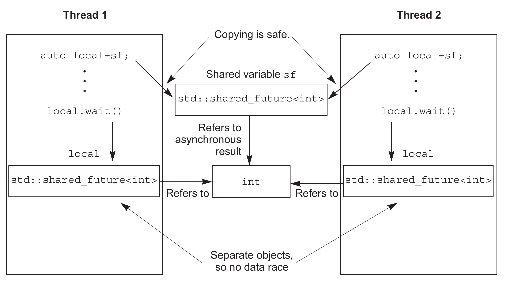

4.2 使用future
假设你要乘飞机去国外度假，当到达机场办理完各种登机手续后，还需要等待机场广播通知登机。这段时间内，你可能会在候机室里面找一些事情来打发时间，比如：读书，上网，或者来一杯咖啡。不过，你就在等待一件事情：机场广播通知登机。
C++标准库将这种事件称为future。当线程需要等待特定事件时，某种程度上来说就需要知道期望的结果。之后，线程会周期性(较短的周期)的等待或检查事件是否触发(检查信息板)，检查期间也会执行其他任务(品尝昂贵的咖啡)。另外，等待任务期间也可以先执行另外的任务，直到对应的任务触发，而后等待future的状态会变为就绪状态。future可能是和数据相关(比如，登机口编号)，也可能不是。当事件发生时(状态为就绪)，这个future就不能重置了。
C++标准库中有两种future，声明在<future>头文件中: unique future(std::future<>)和shared futures(std::shared_future<>)，与了std::unique_ptr和std::shared_ptr非常类似。std::future只能与指定事件相关联，而std::shared_future就能关联多个事件。后者的实现中，所有实例会在同时变为就绪状态，并且可以访问与事件相关的数据。这种关联与模板有关，比如std::unique_ptr 和std::shared_ptr的模板参数就是相关的数据类型。与数据无关处的，可以使用std::future<void>与std::shared_future<void>的特化模板。虽然，我倾向于线程通讯，但future对象本身并不提供同步访问。当多个线程需要访问一个独立future对象时，必须使用互斥量或类似同步机制进行保护。不过，当多个线程对一个std::shared_future<>副本进行访问，即使同一个异步结果，也不需要同步future。
并行技术规范将这两个模板类在std::experimental命名空间中进行了扩展：std::experimental::future<>和std::experimental::shared_future<> 。这个命名空间是为了将其与std命名空间中的模板类进行区分，实验命名空间中为这两个模板类添加了更多的功能。尤其是std::experimental中的内容与代码质量无关(我希望这里也会有较高质量的实现)，需要强调的是这个命名空间提供的都不是标准类和函数，这个命名空间中类和函数的语法和语义，很可能与纳入C++标准(也就是std命名空间)后有所不同。如果想要使用这两个试验性的模板类，需要包含<experimental/future>头文件。
最简单的事件，就是在后台运行的计算操作。第2章中已经清楚了std::thread 执行的任务不能有返回值，不过这个问题能使用future进行解决。
4.2.1 后台任务的返回值
假设有一个需要长时间的运算，需要计算出一个有效值，但并不迫切需要这个值。你可以启动新线程来执行这个计算，你需要计算的结果，而std::thread并不提供直接接收返回值的机制。这里就需要std::async函数模板(也是在头文件<future>)。
当不着急让任务结果时，可以使用std::async启动一个异步任务。与std::thread对象等待的方式不同，std::async会返回一个std::future对象，这个对象持有最终计算出来的结果。当需要这个值时，只需要调用这个对象的get()成员函数，就会阻塞线程直到future为就绪为止，并返回计算结果。
代码4.6 std::future从异步任务中获取返回值
#include <future>
#include <iostream>
int find_the_answer_to_ltuae();
void do_other_stuff();
int main()
{
std::future<int> the_answer=std::async(find_the_answer_to_ltuae);
do_other_stuff();
std::cout<<"The answer is "<<the_answer.get()<<std::endl;
}
与std::thread方式一样，std::async允许通过添加额外的调用参数，向函数传递额外的参数。第一个参数是指向成员函数的指针，第二个参数提供这个函数成员类的具体对象(是通过指针，也可以包装在std::ref中)，剩余的参数可作为函数的参数传入。否则，第二个和随后的参数将作为函数的参数，或作为指定可调用对象的第一个参数。和std::thread一样，当参数为右值时，拷贝操作将使用移动的方式转移原始数据，就可以使用“只移动”类型作为函数对象和参数。
代码4.7 使用std::async向函数传递参数
#include <string>
#include <future>
struct X
{
void foo(int,std::string const&);
std::string bar(std::string const&);
};
X x;
auto f1=std::async(&X::foo,&x,42,"hello"); // 调用p->foo(42, "hello")，p是指向x的指针
auto f2=std::async(&X::bar,x,"goodbye"); // 调用tmpx.bar("goodbye")， tmpx是x的拷贝副本
struct Y
{
double operator()(double);
};
Y y;
auto f3=std::async(Y(),3.141); // 调用tmpy(3.141)，tmpy通过Y的移动构造函数得到
auto f4=std::async(std::ref(y),2.718); // 调用y(2.718)
X baz(X&);
std::async(baz,std::ref(x)); // 调用baz(x)
class move_only
{
public:
move_only();
move_only(move_only&&)
move_only(move_only const&) = delete;
move_only& operator=(move_only&&);
move_only& operator=(move_only const&) = delete;
void operator()();
};
auto f5=std::async(move_only()); // 调用tmp()，tmp是通过std::move(move_only())构造得到
future的等待取决于std::async是否启动一个线程，或是否有任务在进行同步。大多数情况下，也可以在函数调用之前向std::async传递一个额外参数，这个参数的类型是std::launch，还可以是std::launch::defered，表明函数调用延迟到wait()或get()函数调用时才执行，std::launch::async表明函数必须在其所在的独立线程上执行，std::launch::deferred | std::launch::async表明实现可以选择这两种方式的一种。最后一个选项是默认的，当函数调用延迟，就可能不会再运行了。如下所示：
auto f6=std::async(std::launch::async,Y(),1.2); // 在新线程上执行
auto f7=std::async(std::launch::deferred,baz,std::ref(x)); // 在wait()或get()调用时执行
auto f8=std::async(
std::launch::deferred | std::launch::async,
baz,std::ref(x)); // 实现选择执行方式
auto f9=std::async(baz,std::ref(x));
f7.wait(); // 调用延迟函数
本章的后续小节和第8章中，会再次看到这段程序，使用std::async会将算法分割到各个任务中，这样程序就能并发了。不过，这不是让std::future与任务实例相关联的唯一方式，也可以将任务包装入std::packaged_task<>中，或通过编写代码的方式，使用std::promise<>模板显式设置值。与std::promise<>相比，std::packaged_task<>具有更高的抽象，所以我们从“高抽象”模板说起。
4.2.2 future与任务关联
std::packaged_task<>会将future与函数或可调用对象进行绑定。当调用std::packaged_task<>对象时，就会调用相关函数或可调用对象，当future状态为就绪时，会存储返回值。这可以用在构建线程池(可见第9章)或其他任务的管理中，比如：在任务所在线程上运行其他任务，或将它们串行运行在一个特殊的后台线程上。当粒度较大的操作被分解为独立的子任务时，每个子任务都可以包含在std::packaged_task<>实例中，之后将实例传递到任务调度器或线程池中。对任务细节进行抽象，调度器仅处理std::packaged_task<>实例，而非处理单独的函数。
std::packaged_task<>的模板参数是一个函数签名，比如void()就是一个没有参数也没有返回值的函数，或int(std::string&, double*)就是有一个非const引用的std::string参数和一个指向double类型的指针参数，并且返回类型是int。构造std::packaged_task<>实例时，就必须传入函数或可调用对象。这个函数或可调用的对象，需要能接收指定的参数和返回(可转换为指定返回类型的)值。类型可以不完全匹配，因为这里类型可以隐式转换，可以用int类型参数和返回float类型的函数，来构建std::packaged_task<double(double)>实例。
函数签名的返回类型可以用来标识从get_future()返回的std::future<>的类型，而函数签名的参数列表，可用来指定packaged_task的函数调用操作符。例如，模板偏特化std::packaged_task<std::string(std::vector<char>*,int)>会在下面的代码中使用到。
代码4.8 std::packaged_task<>的偏特化
template<>
class packaged_task<std::string(std::vector<char>*,int)>
{
public:
template<typename Callable>
explicit packaged_task(Callable&& f);
std::future<std::string> get_future();
void operator()(std::vector<char>*,int);
};
std::packaged_task是个可调用对象，可以封装在std::function对象中，从而作为线程函数传递到std::thread对象中，或作为可调用对象传递到另一个函数中或直接调用。当std::packaged_task作为函数调用时，实参将由函数调用操作符传递至底层函数，并且返回值作为异步结果存储在std::future中，并且可通过get_future()获取。因此可以用std::packaged_task对任务进行打包，并适时的取回future。当异步任务需要返回值时，可以等待future状态变为“就绪”。
线程间传递任务
很多图形架构需要特定的线程去更新界面，所以当线程对界面更新时，需要发出一条信息给正确的线程，让相应的线程来做界面更新。std::packaged_task提供了这种功能，且不需要发送一条自定义信息给图形界面线程。
代码4.9 使用std::packaged_task执行一个图形界面线程
#include <deque>
#include <mutex>
#include <future>
#include <thread>
#include <utility>
std::mutex m;
std::deque<std::packaged_task<void()> > tasks;
bool gui_shutdown_message_received();
void get_and_process_gui_message();
void gui_thread() // 1
{
while(!gui_shutdown_message_received()) // 2
{
get_and_process_gui_message(); // 3
std::packaged_task<void()> task;
{
std::lock_guard<std::mutex> lk(m);
if(tasks.empty()) // 4
continue;
task=std::move(tasks.front()); // 5
tasks.pop_front();
}
task(); // 6
}
}
std::thread gui_bg_thread(gui_thread);
template<typename Func>
std::future<void> post_task_for_gui_thread(Func f)
{
std::packaged_task<void()> task(f); // 7
std::future<void> res=task.get_future(); // 8
std::lock_guard<std::mutex> lk(m);
tasks.push_back(std::move(task)); // 9
return res; // 10
}
代码十分简单：图形界面线程①循环直到收到一条关闭图形界面的信息后关闭界面②。关闭界面前，进行轮询界面消息处理③，例如：用户点击和执行在队列中的任务。当队列中没有任务④时，循环将继续。除非能在队列中提取出一个任务⑤，释放队列上的锁，并且执行任务⑥。这里future与任务相关，当任务执行完时，其状态会置为“就绪”。
将任务传入队列：提供的函数⑦可以提供一个打包好的任务，通过这个任务⑧调用get_future()成员函数获取future对象，并且在任务推入列表⑨之前，future将返回调用函数⑩。
例子中使用std::packaged_task<void()>创建任务，其中包含了一个无参数无返回值的函数或可调用对象(如果当这个调用有返回值时，返回值会被丢弃)。这可能是最简单的任务，std::packaged_task也可以用于复杂的情况——通过指定不同的函数签名作为模板参数，不仅可以改变其返回类型(因此该类型的数据会存在期望相关的状态中)，也可以改变函数操作符的参数类型。这个例子可以简单的扩展成允许任务运行在图形界面线程上，并且接受传参，还可以通过std::future获取返回值。
这些任务能作为简单的函数调用来表达吗？还有，任务的结果能从很多地方得到吗？这些问题可以使用第三种方法创建future来解决：使用std::promise对值进行显示设置。
4.2.3 使用std::promises
当需要处理很多网络连接时，会使用不同线程尝试连接每个接口，能使网络尽早联通。不幸的是，随着连接数量的增长，这种方式变的越来越不合适。因为大量的线程会消耗大量的系统资源，还有可能造成线程上下文频繁切换(当线程数量超出硬件可接受的并发数时)，这都会对性能有影响。最极端的例子：线程会将系统资源消耗殆尽，系统连接网络的能力会变的极差。因此通过少数线程处理网络连接，每个线程同时处理多个连接，对需要处理大量网络连接的应用而言，这是一种比较普遍的做法。
当线程处理多个连接事件，来自不同的端口连接的数据包基本上以乱序方式进行处理。同样的，数据包也将以乱序的方式进入队列。很多情况下，一些应用不是等待数据成功的发送，就是等待(新的)指定网络接口数据的接收成功。
std::promise<T>提供设定值的方式(类型为T)，这个类型会和后面看到的std::future<T>对象相关联。std::promise/std::future对提供一种机制：future可以阻塞等待线程，提供数据的线程可以使用promise对相关值进行设置，并将future的状态置为“就绪”。
可以通过给定的std::promise的get_future()成员函数来获取与之相关的std::future对象，与std::packaged_task的用法类似。当promise设置完毕(使用set_value()成员函数)时，对应的future状态就变为“就绪”，并且可用于检索已存储的值。当设置值之前销毁std::promise，将会存储一个异常。在4.2.4节中，会详细描述异常是如何传送到线程的。
代码4.10中是单线程处理多接口的实现，这个例子中，可以使用一对std::promise<bool>/std::future<bool>找出传出成功的数据块，与future相关的只是简单的“成功/失败”标识。对于传入包，与future相关的数据就是数据包的有效负载。
代码4.10 使用promise解决单线程多连接问题
#include <future>
void process_connections(connection_set& connections)
{
while(!done(connections)) // 1
{
for(connection_iterator // 2
connection=connections.begin(),end=connections.end();
connection!=end;
++connection)
{
if(connection->has_incoming_data()) // 3
{
data_packet data=connection->incoming();
std::promise<payload_type>& p=
connection->get_promise(data.id); // 4
p.set_value(data.payload);
}
if(connection->has_outgoing_data()) // 5
{
outgoing_packet data=
connection->top_of_outgoing_queue();
connection->send(data.payload);
data.promise.set_value(true); // 6
}
}
}
}
process_connections()中(直到done()返回true①为止)每一次循环，都会依次的检查每个连接②，检索是否有数据③或正在发送已入队的传出数据⑤。假设输入数据包是具有ID和有效负载的(有实际的数在其中)，一个ID映射到一个std::promise(可能是在相关容器中进行的依次查找)④，并且值是在包的有效负载中。传出包是在传出队列中检索，从接口直接发送出去。当发送完成，传出数据相关的promise将置为true，来表明传输成功⑥。是否能映射到实际网络协议上，取决于所用协议。
上面的代码不理会异常，一切工作都会很好的执行，但有悖常理。有时候磁盘满载，有时候会找不到东西，有时候网络会断，还有时候数据库会崩溃。当需要某个操作的结果时，就需要在对应的线程上执行这个操作，因为代码可以通过异常来报告错误。不过，这会对使用std::packaged_task或std::promise带来一些不必要的限制。因此，C++标准库提供了一种在以上情况下清理异常的方法，并且允许将异常存储为相关结果的一部分。
4.2.4 将异常存与future中
看完下面的代码段，思考一下：当你传递-1到square_root()中时，它将抛出一个异常，并且你想让调用者看到这个异常：
double square_root(double x)
{
if(x<0)
{
throw std::out_of_range(“x<0”);
}
return sqrt(x);
}
假设调用square_root()函数不是当前线程，
double y=square_root(-1);
将调用改为异步调用：
std::future<double> f=std::async(square_root,-1);
double y=f.get();
当y获得函数调用的结果，线程调用f.get()时，就能再看到异常了。
函数作为std::async的一部分时，当调用抛出一个异常时，这个异常就会存储到future中，之后future的状态置为“就绪”，之后调用get()会抛出已存储的异常(注意：标准级别没有指定重新抛出的这个异常是原始的异常对象，还是一个拷贝。不同的编译器和库将会在这方面做出不同的选择)。将函数打包入std::packaged_task任务包后，当任务调用时，同样的事情也会发生。打包函数抛出一个异常，这个异常将存储在future中，在get()调用时会再次抛出。
当然，通过函数的显式调用，std::promise也能提供同样的功能。当存入的是异常而非数值时，就需要调用set_exception()成员函数，而非set_value()。这通常是用在一个catch块中，并作为算法的一部分。为了捕获异常，这里使用异常填充promise：
extern std::promise<double> some_promise;
try
{
some_promise.set_value(calculate_value());
}
catch(...)
{
some_promise.set_exception(std::current_exception());
}
这里使用std::current_exception()来检索抛出的异常，可用std::copy_exception()作为替代方案，std::copy_exception()会直接存储新的异常而不抛出：
some_promise.set_exception(std::copy_exception(std::logic_error("foo ")));
这比使用try/catch块更加清晰，当异常类型已知，就应该优先使用。不是因为代码实现简单，而是给编译器提供了极大的优化空间。
另一种向future中存储异常的方式，在没有调用promise上的任何设置函数前，或正在调用包装好的任务时，销毁与std::promise或std::packaged_task相关的future对象。任何情况下，当future的状态还不是“就绪”时，调用std::promise或std::packaged_task的析构函数，将会存储一个与std::future_errc::broken_promise错误状态相关的std::future_error异常。通过创建一个future，可以构造一个promise为其提供值或异常，也可以通过销毁值和异常源，去违背promise。这种情况下，编译器没有在future中存储任何东西，线程可能会永远的等下去。
现在，例子中都在用std::future，不过std::future也有局限性。很多线程在等待的时候，只有一个线程能获取结果。当多个线程等待相同事件的结果时，就需要使用std::shared_future来替代std::future了。
4.2.5 多个线程的等待
虽然std::future可以处理所有在线程间数据转移的同步，但是调用某一特殊 std::future对象的成员函数，就会让这个线程的数据和其他线程的数据不同步。多线程在没有额外同步的情况下，访问独立std::future对象时，就会有数据竞争和未定义行为。因为std::future独享同步结果，并且通过调用get()函数，一次性的获取数据，这就让并发访问变的毫无意义。
如果并行代码没办法让多个线程等待同一个事件，std::shared_future可以帮你解决这个问题。因为std::future是只移动的，所以其所有权可以在不同的实例中互相传递，但只有一个实例可以获得特定的同步结果，而std::shared_future实例是可拷贝的，所以多个对象可以引用同一关联期望值的结果。
每一个std::shared_future的独立对象上，成员函数调用返回的结果还是不同步的，所以为了在多个线程访问一个独立对象时避免数据竞争，必须使用锁来对访问进行保护。优先使用的办法：为了替代只有一个拷贝对象的情况，可以让每个线程都拥有自己对应的拷贝对象。这样，当每个线程都通过自己拥有的std::shared_future对象获取结果，那么多个线程访问共享同步结果就是安全的。可见图4.1。


图4.1 使用多个std::shared_future对象来避免数据竞争
可能会使用std::shared_future的场景，例如：实现类似于复杂的电子表格的并行执行，每一个单元格有唯一终值，这个终值可能由其他单元格中的数据通过公式计算得到。公式计算得到的结果依赖于其他单元格，然后可以使用std::shared_future对象引用第一个单元格的数据。当每个单元格内的所有公式并行执行后，任务会以期望的方式完成工作。不过，当其中有计算需要依赖其他单元格的值时就会阻塞，直到依赖单元格的数据准备就绪。这可以让系统在最大程度上使用硬件并发。
std::shared_future的实例同步std::future实例的状态。当std::future对象没有与其他对象共享同步状态所有权，那么所有权必须使用std::move将所有权传递到std::shared_future，其默认构造函数如下：
std::promise<int> p;
std::future<int> f(p.get_future());
assert(f.valid()); // 1 期望值 f 是合法的
std::shared_future<int> sf(std::move(f));
assert(!f.valid()); // 2 期望值 f 现在是不合法的
assert(sf.valid()); // 3 sf 现在是合法的
期望值f开始是合法的①，因为引用的是promise p的同步状态，但是在转移sf的状态后，f就不合法了②，而sf就是合法的了③。
如其他可移动对象一样，转移所有权是对右值的隐式操作，所以可以通过std::promise对象的成员函数get_future()的返回值，直接构造一个std::shared_future对象，例如：
std::promise<std::string> p;
std::shared_future<std::string> sf(p.get_future()); // 1 隐式转移所有权
转移所有权是隐式的，用右值构造std::shared_future<>，得到std::future<std::string>类型的实例①。
std::future的这种特性，可促进std::shared_future的使用，容器可以自动的对类型进行推断，从而初始化该类型的变量(详见附录A，A.6节)。std::future有一个share()成员函数，可用来创建新的std::shared_future ，并且可以直接转移future的所有权。这样也就能保存很多类型，并且使得代码易于修改：
std::promise< std::map< SomeIndexType, SomeDataType, SomeComparator,
SomeAllocator>::iterator> p;
auto sf=p.get_future().share();
这个例子中，sf的类型推导为std::shared_future<std::map<SomeIndexType, SomeDataType, SomeComparator, SomeAllocator>::iterator>，还真的长。当比较器或分配器有所改动，只需要对promise的类型进行修改即可。future的类型会自动与promise的修改进行匹配。
有时需要限定等待事件的时间，不论是因为时间上有硬性规定(一段指定的代码需要在某段时间内完成)，还是因为在事件没有很快的触发，或是有工作需要特定线程来完成，为了处理这种情况，需要等待函数能对超时进行指定。